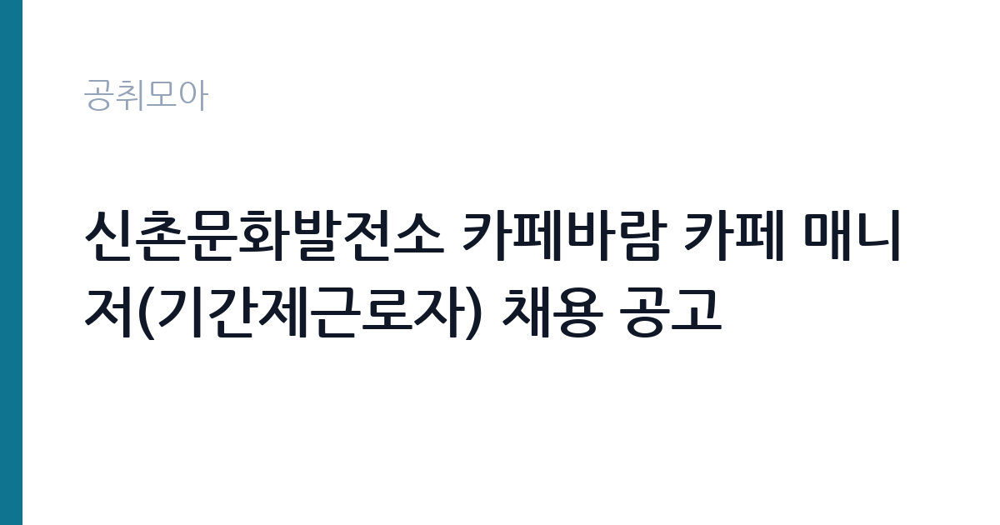

[지자체] 신촌문화발전소 카페바람 카페 매니저(기간제근로자) 채용 공고
서울특별시 서대문구 교육문화체육국 · 서울 · 마감 2026-11-03 (D-11) · 출처 나라일터

한눈에 보는 모집 조건
| 기관 | 서울특별시 서대문구 교육문화체육국 |
|---|---|
| 공고명 | 신촌문화발전소 카페바람 카페 매니저(기간제근로자) 채용 공고 |
| 고용형태 | 기간제 |
| 근무지 | 서울 |
| 게시일 | 2026-10-23 |
| 마감일 | 2026-11-03 (D-11) |
지원자격, 이렇게 읽으세요
- 기간제 근로자 2명 취업지원직(육아휴직대체직) 1명
- 접수 ~2026-11-03 마감
- 세부 조건은 원문 공고문 확인
모집단위는 기간제 근로자 2명, 취업지원직(육아휴직대체직) 1명입니다. 기간제 근로자는 근로계약 기간이 정해진 신분입니다. 계약 기간과 갱신 가능 여부가 근로계약서에 명시되며 기간 만료 시 근로관계가 종료됩니다. 결원 보충이나 특정 사업 기간에 맞춰 채용되는 경우가 많아 업무 범위가 명확합니다. 서류 단계에서 요건을 충족하지 못하면 이후 전형을 준비할 기회가 없습니다. 학력·경력·자격 요건을 항목별로 대조해 표시해 두고, 경력은 재직증명서와 경력증명서로 입증해야 합니다. 증명서에 직무 내용이 구체적으로 적혀 있지 않으면 경력으로 인정받지 못하는 경우가 있으니 발급 전에 기재 내용을 확인하십시오. 자격증은 유효 기간과 등록 상태까지 확인해야 하고, 자격 취득 예정자로 지원하려면 공고문에 예정자 허용 조항이 있는지 반드시 봐야 합니다. 자격 취득 예정자는 채용 공고의 예정자 허용 조항을 먼저 확인해야 합니다. 조항이 없으면 지원 자체가 반려될 수 있습니다.
이 공고의 포인트
이 공고의 첫 번째 포인트는 고용 형태입니다. 계약 기간이 정해져 있어 근무 종료 시점이 명확합니다. 그만큼 짧은 기간에 어떤 실적을 남길지가 중요해집니다. 두 번째는 모집단위가 분명하다는 점입니다. 기간제 근로자 2명, 취업지원직(육아휴직대체직) 1명 단위로 선발하므로 배치 이후 담당 업무의 범위를 미리 가늠할 수 있습니다. 세 번째는 근무지입니다. 서울특별시 서대문구 기준으로 근무지가 정해져 있어 통근 시간과 비용을 함께 계산해야 합니다. 접수 기간은 2026-10-21부터 2026-11-03까지로 길지 않아, 공고를 늦게 확인하면 준비 시간이 그대로 줄어듭니다. 자격 요건이 까다롭지 않은 대신 지원자가 몰리는 유형의 공고입니다.
전형은 어떻게 진행되나
선발 절차는 원문 공고문에 단계별로 적혀 있습니다. 서류전형과 면접전형 외에 직무수행능력 평가가 붙는 경우가 있습니다. 평가 방식은 공고문에 구체적으로 적혀 있으므로 어떤 항목에 배점이 높은지 먼저 파악하십시오. 면접에서는 지원 동기보다 실제 업무 경험에 대한 질문이 많고, 답변의 구체성이 평가를 가릅니다. 전형 일정은 서류 마감 이후 빠르게 진행되므로 연락 가능한 번호를 정확히 기재하고 문자와 메일을 수시로 확인해야 합니다. 최종 단계에서는 결격사유 조회와 신체검사가 진행됩니다. 온라인 접수는 마감 시각이 분 단위로 정해지므로 시스템 시간을 기준으로 판단해야 합니다.
원문에서 확인한 전형 방식
공고문_신촌문화발전소2026 카페 매니저 채용.pdf 응시자 제출서류_신촌문화발전소2026 카페매니저 채용.hwp 2026년 한국법무보호복지공단 서울지부 취업지원직(육아휴직대체직) 채용 최종합격자 발표 및 채용후보자 등록 안내 공고.pdf
이런 분께 추천해요
- 서울특별시 서대문구에서 출퇴근이 가능한 분
- 카페 운영 직무 경험이나 관련 자격을 갖춘 분
- 기간제 조건과 근무 기간을 확인하고 지원할 수 있는 분
지원 전 체크리스트
- 응시자격 요건을 충족하는가 — 경력은 증명서로 입증해야 합니다
- 계약 기간과 근무 시작일·종료일을 확인했는가
- 제출서류 목록을 모두 준비했는가 — 누락 시 서류 단계에서 탈락합니다
- 접수 마감 2026-11-03 이전에 접수 방식을 확인해 제출했는가
모집 일정과 제출 타이밍
접수는 2026-10-21에 시작해 2026-11-03에 마감됩니다. 공고 게시일 2026-10-23부터 계산하면 준비 기간은 약 11일입니다. 우편 접수는 도착 기준으로 판정되는 경우가 많아 마감일 소인만 믿으면 안 됩니다. 마감 이후에는 어떤 사유로도 접수가 인정되지 않으므로 하루 전 제출을 목표로 하십시오. 서울 근무지는 대중교통 접근성이 좋은 대신 주차와 통근 시간이 변수입니다. 출퇴근 경로를 미리 확인하십시오.
직무 이해하기: 지자체
발전 설비 운영 기관은 발전소의 정비와 운전, 안전 관리를 담당합니다. 정비 인력과 지원 인력이 함께 근무하며 원자력 본부는 안전 규정과 보안 절차가 매우 엄격합니다. 교대 근무와 현장 대기가 업무의 일부입니다. 신촌문화발전소는 청년예술가 지원 공간으로 카페 바람을 직접 운영합니다. 매니저는 음료 제조와 재료·재고 관리, 고객 응대, 공간 운영을 맡습니다. 직무 교육은 입사 후 기관 자체 계획에 따라 진행되므로 사전 경험이 없어도 시작할 수 있습니다.
자기소개서 작성 팁
카페 운영 지원서는 직무 연관성을 앞세우는 것이 핵심입니다. 첫 문단에 지원 직무와 본인 경험을 한 문장으로 연결하고, 이어서 담당했던 업무의 규모와 결과를 수치로 제시하십시오. 문항별 글자 수 제한을 먼저 확인하고, 각 문항의 첫 문장에 결론을 배치하는 방식이 읽기 쉽습니다. 지원 동기는 기관의 어떤 사업에 기여하겠다는 한 문장으로 시작하고, 이어서 본인의 경험을 근거로 붙이십시오. 감점을 피하려면 다른 기관에 보낼 수 있는 범용 문장을 그대로 쓰지 않는 것이 중요합니다. 기관 이름과 사업명이 문장 안에 자연스럽게 들어가야 준비도가 드러납니다.
면접 준비 포인트
면접에서는 카페 운영 직무를 얼마나 이해하고 있는지, 그리고 서울특별시 서대문구 교육문화체육국의 사업을 어느 정도 알고 있는지 확인합니다. 답변은 상황, 판단, 조치 순서로 정리하면 전달이 분명해집니다. 답변 시간이 짧게 정해져 있는 경우가 있으므로 핵심 문장을 먼저 말하고 근거를 붙이는 방식이 유리합니다.
급여·근무조건 읽는 법
기간제 근로자는 근로계약 기간이 정해진 신분이라 계약 종료 시점이 명확합니다. 보수는 기관의 기간제 임금 기준에 따라 월급 또는 일급으로 정해지고, 계약 기간이 짧으면 월 급여가 높아도 연간 총액은 적어질 수 있습니다. 2026년 적용 최저임금은 시급 10,320원, 월 환산 2,156,880원(209시간 기준, 고용노동부 고시 제2025-47호)입니다. 같은 기관의 무기계약직과 업무가 비슷해도 신분이 다르면 수당 항목이 달라지므로, 첨부 공고문의 처우표에서 기본급·수당·상여를 항목별로 확인하십시오. 이번 공고 본문에는 연봉·월급 실액이 제시되지 않아 구체적인 금액은 첨부 공고문의 처우 항목에서 확인해야 합니다. 실수령액을 계산하려면 세금과 4대 보험료를 빼야 합니다. 공고문에는 세전 금액만 제시되는 경우가 많으므로, 월 급여에서 약 9% 안팎의 공제가 발생한다고 보고 대략적인 수령액을 가늠하십시오. 부양가족 수와 비과세 항목에 따라 차이가 나므로 정확한 금액은 급여 담당 부서에 문의하는 것이 가장 확실합니다. 수당 항목과 지급 주기도 함께 확인하십시오.
자주 묻는 질문
- 선발 인원과 직급은 어떻게 되나요?
이번 공고의 모집단위는 기간제 근로자 2명, 취업지원직(육아휴직대체직) 1명입니다. 직종별 인원과 직급은 공고문 모집분야 항목에 표로 제시되어 있으니 원문에서 확인하십시오. - 근무지는 어디인가요?
서울특별시 서대문구입니다. 세부 근무지와 출퇴근 조건은 원문 공고문의 근무예정지 항목에서 확인할 수 있습니다. - 보수는 얼마인가요?
기간제 신분에 따라 서울특별시 서대문구 교육문화체육국의 임금 규정 또는 보수규정을 적용받습니다. 본문에 확정 금액이 없으므로 첨부 공고문 처우표에서 기본급과 수당을 나눠 확인하십시오.
함께 보면 좋은 공고
[지자체] 울산광역시 개방형직위 공개 모집(서울본부장) — 마감 2026-11-09[지자체] 2026년 제2회 임실군 공무직근로자 및 출자출연기관 채용 계획공고(사무보조,조리사,환경관리,농기계관리,환경미화원) — 마감 2026-11-04[지자체] 2026년 제7회 의정부시 지방임기제공무원 임용시험 시행계획 공고(교통(버스정책), 북한이탈주민 정착지원) — 마감 2026-10-29출처: 나라일터 공개정보를 바탕으로 공취모아가 정리한 안내글입니다. 모집 조건·일정은 변경될 수 있으니 지원 전 반드시 원문 공고문을 확인하세요. 본 글은 정보 제공용이며 합격을 보장하지 않습니다.